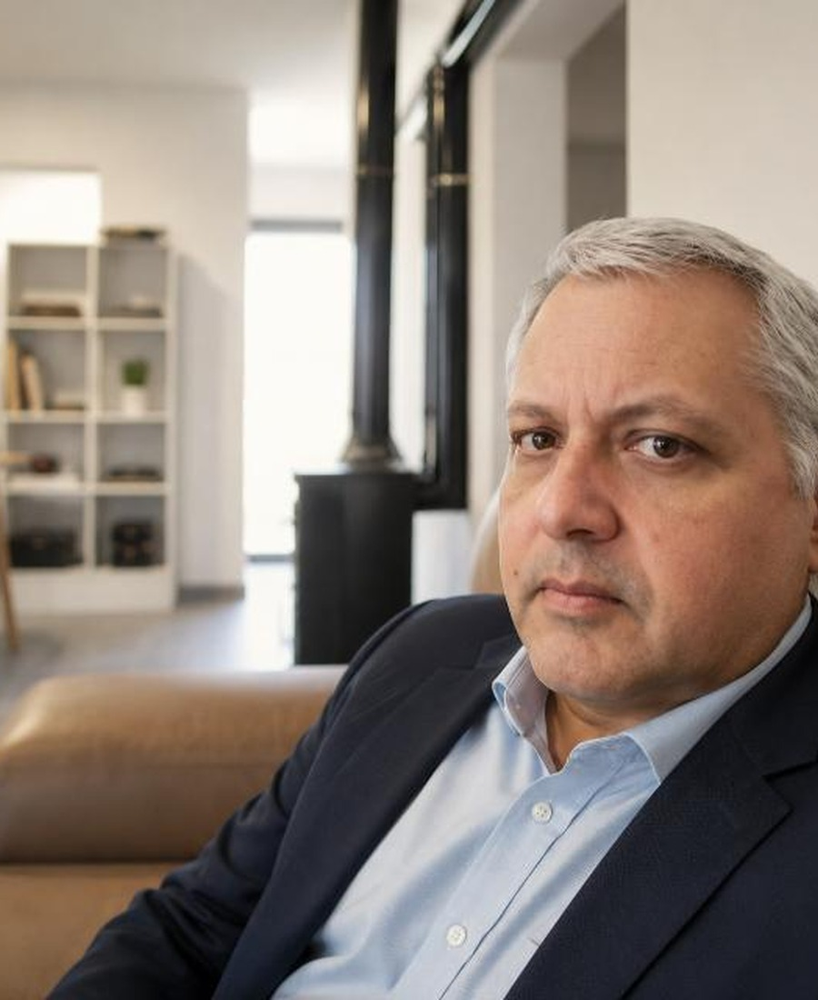

Gleidys Leal
Ingeniera Química · Sistemas de Gestión · Operaciones
Especialista en sistemas integrados de gestión, procesos, auditorías, riesgos, mejora continua y seguridad de la cadena de suministro.
Profesionales comprometidos con acompañar transformaciones reales.
Especialista en sistemas integrados de gestión, procesos, auditorías, riesgos, mejora continua y seguridad de la cadena de suministro.

Profesional orientado a la dirección de proyectos, alineación estratégica, seguimiento, transformación y desarrollo organizacional.